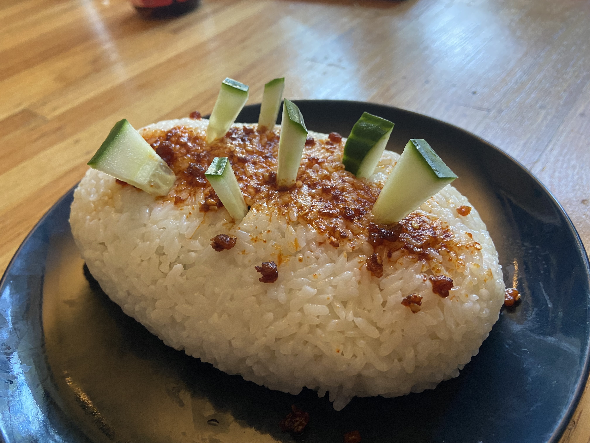

October Rice

Why would someone do this?
I've often asked myself what drives my culinary ventures. In this case, it was being too lazy to shape onigiri or make the vinegar mixture for sushi, but not wanting to have the meal look ugly. Since we were coming up on October, (spooky) some red chili miso on top was a particularly nice touch to make this dish seasonal.
What must I purchase to make this exquisite dish?
- Instant Pot or Rice Cooker
- Sushi rice (1.5cup)
- Firm Tofu (200g)
- Soy Sauce
- Sesame Oil
- 1/4 Cucumber
- Chili Oil (chili miso to make thicker if you can)
- Parchment Paper
What now, king?
- Wash your rice first! Then put it on while you go do the rest. When I make mine via instant pot, I use the 10 minute pressure cook on high, then natural release of pressure.
- Slice your tofu into long thin strips (almost like spaghetti), and (in a bowl) pour some soy sauce and sesame oil over them. Use maximum 1tbsp of sesame oil, and don't drown them. Instead, use a fork to flip things around occasionally to make sure the tofu gets covered.
- Cut the cucumber into medium thickness strips, along the length of it. You will then take these rectangular cuts of cucumber and cut them into triangles.
- Once the rice is done, use the parchment paper and a kitchen implement of any variety to flatten a layer of rice, then add tofu and some cumumber on top. Add another (smaller) layer of rice on top, then crush it into a ball/oval shape like in the picture above.
- pour chili oil over the top, (max 1 tbsp), then soy sauce (max 1 tbsp). Using a knife open small incisions in the top of your rice ball, inserting cucumber to make a grotesque and spooky scene.
Back To Top
More recipies